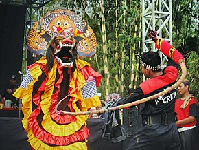
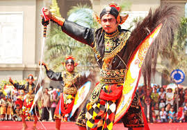

Sejarah seni tari jaranan
Jaranan muncul di kediri itu hanya untuk menggambarkan boyongnya dewi Songgo langit dari kediri menuju Wengker Bantar Angin. Pada saat boyongan ke Wengker, Dewi Sangga Langit dan Klana Sewandana diarak oleh Singo Barong. Pengarakan itu dilakukan dengan menerobos dari dalam tanah sambil berjoget.

Jaranan Dan Representasi Abangan
Cliford Geertz mengidentifikasi mereka dengan sebutan abangan. Geertz memberikan penjelasan tentang praktik abangan. Masayarakat abangan adalah suatu sekte politio-religius di mana kepoercayaan jawa asli melebur dengan Marxisme yang Nasionalistis yang memungkinkan pemeluknya sekaligus mendukung kebijakan komunisdi Indonesia. Sambil memurnikan upacara-upacara abangan dari sisa-sisa Islam (Geertz 1983). Dalam perkembanganya kesenian jaranan mengalami pasang surut. Hal ini disebabkan kondisi social masyarakat yang sudah berubah dalam memaknai dan mengambangkan jaranan.

Samboyo Spirit Baru Jaranan Kepang Kediri
Dalam rangka memperbaiki citra jaranan di muka masyarakat, seniman jaranan mulai menghaluskan jaranan. Pada tahun 70an gerakan untuk merevitalisasi jaranan sudah mulai diupayakan. Penghalusan dalam wilayah tarian, dandanan dan musikpun sudah mulai dilakukan. Para seniman jaranan mulai memodifikasi jaranan dari pakaian, make up, dan tarian serta musiknya.
Home